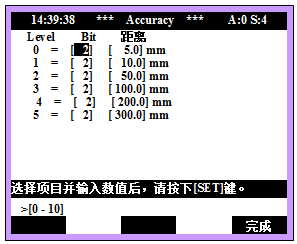
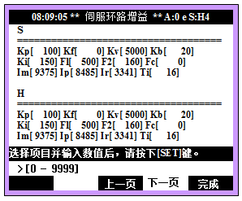
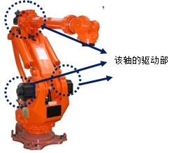

在发送所有位置指令至伺服板的情况下，即使等待一段时间，机器人也不会进入记录于步骤的准确度（Accuracy）范围内。这是因准确度范围过窄或机器人产生振动而产生的错误。
|
1. 请检查准确度范围。 2. 请通过调整避免机器人产生振动。 3. 请更换伺服板并确认是否有异常。 4. 请确认驱动部是否正常工作。 |
1. 请确认Accuracy（准确度）范围
确认记录于步骤中的准确度级别，并在手动模式下，选择 系统> 3: 机器人参数 > 8: Accuracy 。

比如说，如果发生问题的步骤的Accuracy为0，请将Level 0的 Bit和距离上调至作业允许的范围内。
2. 请通过调整避免机器人内部产生振动
若在停止状态下机器人工具末端有残余振动，则无法实现Accuracy OK，所以请调整使得机器人末端不会产生振动。
输入工程师代码“R314”后，在手动模式下选择 系统> 3: 机器人参数 > 12: 伺服参数设置 >1: 伺服环路增益。

若机器人末端产生振动，将各轴伺服参数中的F1和F2按照同样的比率同时对整个轴进行上调。比如说，如上图所示，在F1=500, F2=160 的情况下，若要增加20%，就需以F1=600, F2=192的条件对全轴进行统一调整。
虽然F1、F2越大，周期时间越会延迟，但为了减少震动，不得不承受这个问题。如果不把F1、F2按照全轴统一值设定，会发生机器人工具末端不出现直线轨迹的问题。因此要加以注意。
3. 请更换伺服板后确认是否有异常。
更换伺服马达后，若不发生错误，这就表示伺服马达的不良。请把伺服马达更换为正常品。
4. 请确认驱动部是否正常运行。
请确认该轴的驱动部(马达、减速器)是否正常运行。
